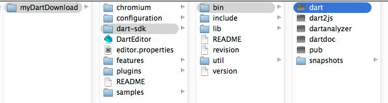
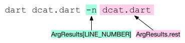

Write Command-Line Apps
An introduction to standalone apps
This tutorial teaches you how to build command-line apps and shows you a few small command-line applications. These programs use resources that most command-line applications need, including the standard output, error, and input streams, command-line arguments, files and directories, and more.
- Running an app with the standalone Dart VM
- Review briefly the dcat example code
- Parsing command-line arguments
- Reading and writing with stdin, stdout, and stderr
- Getting info about a file
- Reading a file
- Writing a file
- Getting environment information
- Setting exit codes
- Summary
- Other resources
- What next?
Running an app with the standalone Dart VM
To run a command-line app, you need the Dart VM (dart),
which comes in the Dart SDK download.
(If you downloaded Dart Editor, you already have the Dart VM.)
If you installed the Dart download in a directory called ~/myDartDownload,
you can find dart
in ~/myDartDownload/dart-sdk/bin.

By putting this directory in your PATH
you can refer to the dart command and other commands,
such as the dart analyzer, by name.
Let’s run a small program.
-
Create a file called
helloworld.dartthat contains this code:void main() { print('Hello, World!'); } -
In the directory that contains the file you just created, run the program with the command as shown by the highlighted text.
%
dart helloworld.dartHello, World! %
The Dart VM supports many options.
Use dart --help to see commonly used options.
Use dart --verbose to see all options.
Review briefly the dcat example code
Take a quick look at the code for a small sample called dcat,
which displays the contents of any files listed on the command line.
This program uses various classes, functions, and properties
available to command-line apps.
This tutorial goes into detail about this app in the following sections.
For a brief look now, hover over the highlighted code below for explanations.
import 'dart:async'; import 'dart:convert'; import 'dart:io'; import 'package:args/args.dart'; const LINE_NUMBER = 'line-number'; var NEWLINE = '\n'; ArgResults argResults; void main(List<String> arguments) { final parser = new ArgParser() ..addFlag(LINE_NUMBER, negatable: false, abbr: 'n'); argResults = parser.parse(arguments); List<String> paths = argResults.rest; dcat(paths, argResults[LINE_NUMBER]); } Future dcat(List<String> paths, bool showLineNumbers) { if (paths.isEmpty) { // No files provided as arguments. Read from stdin and print each line. return stdin.pipe(stdout); } else { return Future.forEach(paths, (path) { int lineNumber = 1; Stream<List<int>> stream = new File(path).openRead(); return stream .transform(UTF8.decoder) .transform(const LineSplitter()) .listen((line) { if (showLineNumbers) { stdout.write('${lineNumber++} '); } stdout.writeln(line); }).asFuture().catchError((_) => _handleError(path)); }); } } _handleError(String path) { FileSystemEntity.isDirectory(path).then((isDir) { if (isDir) { print('error: $path is a directory'); } else { print('error: $path not found'); } }); exitCode = 2; }
Parsing command-line arguments
The args package, a software bundle that contains a library of Dart code, provides parser support for transforming raw command-line arguments into a set of options, flags, and additional values. Import the library as follows:
import 'package:args/args.dart';
The args library contains two classes:
| Library | Description |
|---|---|
| ArgParser | A class that parses command-line arguments |
| ArgResults | The result of parsing command-line arguments using ArgParser. |
Let’s take a look at the dcat sample,
which uses ArgParser and ArgResults to parse and store its command-line arguments.
-
Copy the sample file from the github repo: dcat.dart.
-
Run the program from the command line as shown by the highlighted text.
$
dart dcat.dart -n quotes.txt1 Be yourself. Everyone else is taken. -Oscar Wilde 2 Don't cry because it's over, smile because it happened. -Dr. Seuss 3 You only live once, but if you do it right, once is enough. -Mae West ...The program displays the contents of the source code file and preceeds each line with a line number.
The following diagram shows how the dcat command line used above
is parsed into the ArgResults object.

You can access flags and options by name,
treating the ArgResults object like a Map.
You can access other values with properties such as rest.
Here’s the code from dcat that deals with command-line arguments:
... ArgResults argResults; void main(List<String> arguments) { final parser = new ArgParser() ..addFlag(LINE_NUMBER, negatable: false, abbr: 'n'); argResults = parser.parse(arguments); List<String> paths = argResults.rest; dcat(paths, argResults[LINE_NUMBER]); } ...
The API docs for the args library provide detailed information to help you use ArgsParser and ArgResults classes.
Reading and writing with stdin, stdout, and stderr
Like other languages, Dart has standard output, standard error, and standard input streams. The standard I/O streams are defined at the top level of the dart:io library,
| Stream | Description |
|---|---|
| stdout | The standard output |
| stderr | The standard error |
| stdin | The standard input |
Import the dart:io library as follows:
import 'dart:io';
Only command-line applications, not web applications, can use the dart:io library.
stdout
Here’s the code from the dcat program that writes the line number to the stdout
(if the -n flag is set) followed by the line from the file.
if (showLineNumbers) {
stdout.write('${lineNumber++} ');
}
stdout.writeln(line);
The write() and writeln() methods take an object of any type,
convert it to a string, and print it. The writeln() method
also prints a newline character.
dcat uses the write() method to print the line number so the
line number and the text appear on the same line.
You can also use the writeAll() method to print a list of objects,
or use addStream() to asynchronously print all of the elements from a stream.
stdout provides more functionality than the print() function.
For example, you can display the contents of a stream with stdout.
However, you must use print() instead of stdout
for programs that are converted to and run in JavaScript.
stderr
Use stderr to write error messages to the console.
The standard error stream has the same methods as stdout,
and you use it in the same way.
Although both stdout and stderr print to the console,
their output is separate
and can be redirected or piped at the command line
or programmatically to different destinations.
This code from dcat prints an error message if the user
tries to list a directory or if the file is not found.
if (isDir) {
stderr.writeln('error: $path is a directory');
} else {
stderr.writeln('error: $path not found');
}
stdin
The standard input stream typically reads data synchronously from the keyboard, although it can read asynchronously and it can get input piped in from the standard output of another program.
Here’s a small program that reads a single line from stdin:
import 'dart:io';
void main() {
stdout.writeln('Type something');
String input = stdin.readLineSync();
stdout.writeln('You typed: $input');
}
The readLineSync() method reads text from the standard input stream,
blocking until the user types in text and presses return.
This little program prints out the typed text.
In the dcat program,
if the user does not provide a filename on the command line,
the program instead reads synchronously from stdin
using the pipe() method.
return stdin.pipe(stdout);
In this case, the user types in lines of text and the program copies them to stdout. The user signals the end of input by typing <ctl-d>.
$dart dcat.dartThe quick brown fox jumped over the lazy dog.The quick brown fox jumped over the lazy dog. ...
Getting info about a file
The FileSystemEntity class in the dart:io library provides properties and static methods that help you inspect and manipulate the file system.
For example, if you have a path,
you can determine whether the path is a file, a directory, a link, or not found
by using the type() method from the FileSystemEntity class.
Because the type() method accesses the file system,
it performs the check asynchronously within a Future.
The following code from
the dcat example uses FileSystemEntity to determine if the path provided
on the command line is a directory.
The Future returns a boolean that indicates
if the path is a directory or not.
FileSystemEntity.isDirectory(path).then((isDir) {
if (isDir) {
stderr.writeln('error: $path is a directory');
} else {
stderr.writeln('error: $path not found');
}
exit(2);
});Other interesting methods in the FileSystemEntity class
include isFile(), exists(), stat(), delete(),
and rename(),
all of which also use a Future to return a value.
FileSystemEntity is the superclass for the File, Directory, and Link classes.
Reading a file
dcat opens each file listed on the command line
with the openRead() method,
which returns a stream.
The listen() method registers a callback function that runs
when data becomes available on the stream.
The callback function writes that data to stdout.
return Future.forEach(paths, (path) {
int lineNumber = 1;
Stream<List<int>> stream = new File(path).openRead();
return stream
...
.listen((line) {
if (showLineNumbers) {
stdout.write('${lineNumber++} ');
}
stdout.writeln(line);
}).asFuture()
.catchError((_) => _handleError(path));
});
The following shows the rest of the
code, which uses two decoders that transform the data before the
listen() callback function runs.
The UTF8 decoder converts the data into Dart strings.
LineSplitter splits the data at newlines.
return Future.forEach(paths, (path) {
int lineNumber = 1;
Stream<List<int>> stream = new File(path).openRead();
return stream
.transform(UTF8.decoder)
.transform(const LineSplitter())
.listen((line) {
if (showLineNumbers) {
stdout.write('${lineNumber++} ');
}
stdout.writeln(line);
}).asFuture()
.catchError((_) => _handleError(path));
});
The dart:convert library contains these and other data converters, including one for JSON. To use these converters you need to import the dart:convert library:
import 'dart:convert';
Writing a file
The easiest way to write text to a file is to
create a
File
object and use the writeAsString() method:
File quotesFile = new File('quotes.txt');
String stronger = 'That which does not kill us makes us stronger. -Nietzsche';
quotesFile.writeAsString(stronger, mode: FileMode.APPEND)
.then((_) { print('Data written.'); });
The writeAsString() method writes the data asynchronously via a Future.
It opens the file before writing and closes the file when done.
To append data to an existing file, you can use the optional
parameter mode and set its value to FileMode.APPEND.
Otherwise, the mode is FileMode.WRITE and the previous contents of the file,
if any, are overwritten.
If you want to write more data, you can open the file for writing.
The openWrite() method returns an IOSink (the same type as stdin and stderr).
You can continue to write to the file until done,
at which time, you must close the file.
The close() method is asynchronous and returns a Future.
IOSink quotes = new File('quotes.txt').openWrite(mode: FileMode.APPEND);
quotes.write('A woman is like a tea bag; ');
quotes.write("you never know how strong it is until it's in hot water.");
quotes.writeln(" -Eleanor Roosevelt");
quotes.close().then((_) { print('done'); } );
Getting environment information
Use the Platform class to get information about the machine and OS that the program is running on. Note: Use the Platform class from the dart:io library, not from the dart:html library.
Platform.environment provides a copy of the environment
variables in an immutable map. If you need a mutable map (modifiable copy) you
can use Map.from(Platform.environment).
Map environmentVars = Platform.environment;
print('PWD = ${environmentVars["PWD"]}');
print('LOGNAME = ${environmentVars["LOGNAME"]}');
print('PATH = ${environmentVars["PATH"]}');
Platform provides other useful properties that give
information about the machine, OS, and currently
running program.
For example:
Platform.isMacOS()Platform.numberOfProcessorsPlatform.script.path
Setting exit codes
The dart:io library defines a top-level property,
exitCode, that you can change to set the exit code for
the current invocation of the Dart VM.
An exit code is a number passed from
the Dart program to the parent process
to indicate the success, failure, or other state of the
execution of the program.
The dcat program sets the exit code
in the _handleError() function to indicate that an error
occcurred during execution.
_handleError(String path) {
FileSystemEntity.isDirectory(path).then((isDir) {
if (isDir) {
stderr.writeln('error: $path is a directory');
} else {
stderr.writeln('error: $path not found');
}
exitCode = 2;
});
}
An exit code of 2 indicates that the program encountered an error.
An alternative to using exitCode is to use the top-level exit() function,
which sets the exit code and quits the program immediately.
For example, the _handleError() function could call exit(2)
instead of setting exitCode to 2,
but exit() would quit the program
and it might not process all of the files on the command line.
Although you can use any number for an exit code, by convention, the codes in the table below have the following meanings:
| Code | Meaning |
|---|---|
| 0 | Success |
| 1 | Warnings |
| 2 | Errors |
Summary
This tutorial described some basic API found in these classes from the dart:io library:
| API | Description |
|---|---|
| IOSink | Helper class for objects that consume data from streams. |
| File | Represents a file on the native file system |
| Directory | Represents a directory on the native file system |
| FileSystemEntity | Superclass for File and Directory |
| Platform | Provides information about the machine and operating system |
| stdout | The standard output |
| stderr | The standard error |
| stdin | The standard input |
| exitCode | Sets the exit code |
| exit() | Sets the exit code and quits |
In addition, this tutorial covers two classes that help with command-line arguments:
| Class | Description |
|---|---|
| ArgParser | A class that transforms a list of raw arguments and into a set of options, flags, and remaining values. |
| ArgResults | The result of parsing raw command line arguments using ArgParser. |
Other resources
Check out the Command-line Apps Programmers’ Guide to find more resources related to writing command-line apps.
See the Dartiverse Search walkthrough for an example of another kind of command-line app: an HTTP server.
Refer to the API docs for dart:io, dart:async, dart:convert, and the args package for more classes, functions, and properties.
What next?
Try the Weigh Anchor: Deploy a Server and App code lab to learn how to deploy your project to the Heroku hosting service.
The Get Input from a Form tutorial features a client-server. The code for the server, which uses CORS headers and handles POST requests, is explained in detail.